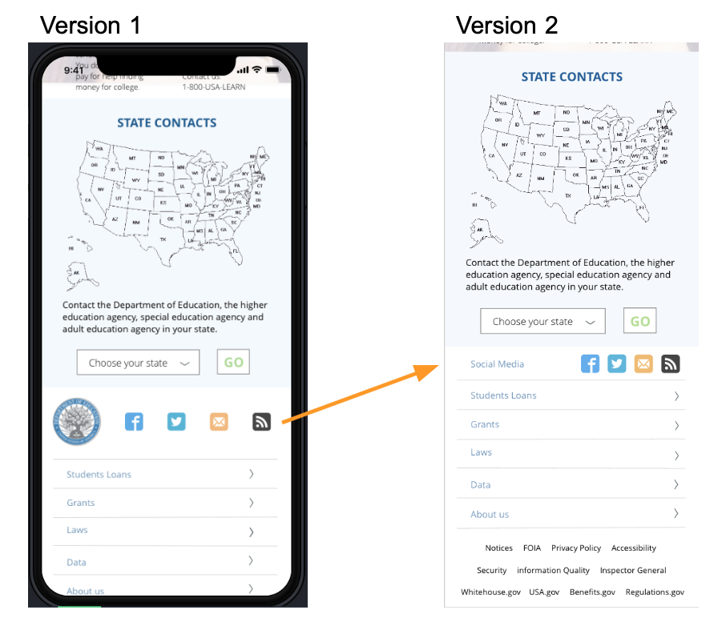

<!DOCTYPE html>
<html>
<head>
  
        <link rel="stylesheet" href="https://stackpath.bootstrapcdn.com/bootstrap/4.3.1/css/bootstrap.min.css" integrity="sha384-ggOyR0iXCbMQv3Xipma34MD+dH/1fQ784/j6cY/iJTQUOhcWr7x9JvoRxT2MZw1T" crossorigin="anonymous">
        <script src="https://stackpath.bootstrapcdn.com/bootstrap/4.3.1/js/bootstrap.min.js" integrity="sha384-JjSmVgyd0p3pXB1rRibZUAYoIIy6OrQ6VrjIEaFf/nJGzIxFDsf4x0xIM+B07jRM" crossorigin="anonymous"></script>

        <title>Department of Education</title>
        <link href="https://fonts.googleapis.com/css?family=Muli&display=swap" rel="stylesheet">
        <link href="https://fonts.googleapis.com/css?family=Russo+One&display=swap" rel="stylesheet">
        <link href="css/style.css" 
        rel="stylesheet" type="text/css">

        <link href="css/style_edu.css" 
        rel="stylesheet" type="text/css">

        <link href="css/style_fff.css" rel="stylesheet" type="text/css">
        <link rel="stylesheet" href="css/footer-distributed-with-search.css">
        <link rel="stylesheet" href="https://cdnjs.cloudflare.com/ajax/libs/font-awesome/4.7.0/css/font-awesome.min.css">
        <link href="https://fonts.googleapis.com/css?family=Bungee+Outline&display=swap" rel="stylesheet">
        <link href="https://fonts.googleapis.com/css?family=Bungee+Outline|Fredoka+One&display=swap" rel="stylesheet">
        <link href="https://fonts.googleapis.com/css?family=Alegreya+Sans+SC:400,700&display=swap" rel="stylesheet">
        <link href="https://fonts.googleapis.com/css?family=Open+Sans&display=swap" rel="stylesheet">
    </head>
    </html>

     <!-- Paste Navigation Code Below -->

     <nav class="navcolor navbar navbar-expand-lg navbar-light bg-light" style="background: white;">
        <button class="navbar-toggler" type="button" style="background-color: white;" data-toggle="collapse" data-target="#navbarTogglerDemo03" aria-controls="navbarTogglerDemo03" aria-expanded="false" aria-label="Toggle navigation">
          <span class="navbar-toggler-icon"></span>
        </button>
        <a class="navbar-brand" href="index.html"> 
            
        </a>
      
        <div class="collapse navbar-collapse" id="navbarTogglerDemo03" style="color: white;">
          <ul class="navbar-nav mr-auto mt-2 mt-lg-0">
            <li class="nav-item">
              <a class="nav-link" style="color: rgb(23, 92, 73);" href="index.html#aboutmetitle">About me <span class="sr-only">(current)</span></a>
            </li>
            <li class="nav-item">
              <a class="nav-link" style="color: rgb(23, 92, 73);"   href="index.html#myworks_title">My works</a>
            </li>
            <li class="nav-item link_color">
              <a class="nav-link" style="color: rgb(23, 92, 73);"  href="index.html#touch_title" tabindex="-1" aria-disabled="true">Contacts</a>
            </li>
          </ul>
        </div>
      </nav>
           

    
        <p class="fff">DEPARTMENT OF EDUCATION</p>
        <p class="fff2">Government website redesign study</p>

<div class="lining"></div>
<div class="lining2"></div>
        <div class="work_fff">
                <p id="myrole"> 
                        Individual project. <br>
                        Role: UX/UI Designer <br>
                        Timeline: 2 weeks
                    </p>
  <!--<div class="picture">

  
                </div>-->

  <p id="overview"><strong>OVERVIEW:</strong><br> <br>U.S. Department of Education mission is to promote student achievement and preparation for global competitiveness by fostering educational excellence and ensuring equal access. Webste needs redesign to group all the important information in clear blocks and enhance user experience. <br>
  </p>

<p id="problem_top">
<strong>PROBLEM: </strong><br> <br>Education is an important part of peoples lives and we need to be sure we can get quick and clear access to all the information regarding education-related data, grants, loans and laws, no matter if we are parents, students-to-be or just people with an interest in educational information.
                  
 </p> 
        
</div>

<div class="parallaxedu1"></div>

<div class="whyedu">

    <h1 id="whyedu_title">WHY U.S. DEPARTMENT OF STATE?</h1>
  <p id="whyedutext">
      My choice of redesigning government website has fallen onto U.S. Department of Education because Education is important part of people’s lives and we need to be sure we can get quick and clear access to all the information regarding education-related data, grants, loans and laws, no matter we are parents, students-to-be or just people with interest in this information.<br> <br>
      Current website shows the clear categories and good informative footer. <br> <br>
      But still few things to my mind need redesigning:<br><br>
1. Once you click on the Primary menu category (Laws), it will open but can contain modified category name (Laws & Guidance). It has to be consistent.<br><br>
2. When you hover over category in Primary menu it would be good to see the sliding drop down menu, not to click and go to another page. It will save time and provides user with more information and correct path to move.<br><br>
3. Website is divided into horizontal fields but sometimes they contain different pieces of information. It would be good to group them and position on the page more logically.<br><br>

  </p>

  <h1 id="checkoldedu">
    Check below current website homepage
  </h1>
  
  </div>

<div class="parallaxedu2"></div>

<div class="edu-user">

    <h1 id="edu-user_title">User Persona</h1>

    <p id="usertext">
     Who would be our user? Definitely the person who is interested in education. Meet Charlie Pen!</p>


<h1 id="task_title">Task Analysis</h1>
<p id="task-text">
    Better understanding of the user’s actions and user flow will help to ideate and iterate and improve the users’ experience. We put the following questions: <br>
<br>
    1. What prompts users to start their task?<br>
    2. How users will know when the task is completed?<br>
    3. What the users know in order to complete the task?<br>
    4. What tools or information do the users utilize during the task execution?<br>
<br>
    Task Sample:
    <ul id="task_list">
    <li>Go to the website: www.ed.gov</li>
    <li>Check the types of loans.</li>
    <li>Find loan services (1098-E tax form).</li>
    <li>Find information about Financial Aid.</li>
    <li>Check FAQs.</li>
    </ul>

  </p>

  

  </div>

  <div class="parallaxedu3"></div>

  <div class="heuru">

      <h1 id="heuru_title">Heuristic Analysis</h1>
    <p id="heurutext">
        During the Heuristic Analysis of U.S Department of Education was revealed:<br> <br>
        <ol id="list_analysis">
        <li>Primary purpose of website is clear, provided images serve a purpose. Major headings, links, search box, contact information are easy to find. Consistent way to return home through logo button.</li>
        <li>Some of the elements require some enhancement for better user experience: color scheme, white space use, clearer terminology (abbreviations can be confusing), possibility to identify where are you on the site (with highlighted sections or breadcrumbs), too many links on one page can be overwhelming.</li>
        <li>Elements with redesign considerations: more consistent design throughout the website(font, category division etc), categorize content into additional sections, provide dropdown options for the Primary Menu to have easy and quick access to all possible sections, maybe highlight better current and important featured events.</li>
        </ol>
        <br>
    </p>
  
    
    </div>

    <div id="ia-section">
        <h1 id="ia_title">Information Architecture Card Sorting</h1>
    <p id="iatext">
        During the card sorting process Primary, Secondary and Tertiary navigation of the current website was exemined and reconsidered navigation was offered.<br> <br>
    </div>

    <div class="parallaxedu4"></div>
<div id="sitemap">

    

    <h1 id="sitemap_title">New Sitemap of the Department of Education</h1>

    
  </div>

  <div id="styletile">
      <h1 id="styletile_title">Website Redesign Style Tile</h1>
      <p id="styletext">
          When creating the style guide for the Department of Education website redesign blue, green and pastel color tones were taken in consideration as well as Open Sans font in different modifications.<br><br> </p>
          <p id="blue-green"> <span id="blueText">Blue</span> conveys a subtle connotation of importance and confidence, without being overly serious, sombre or sinister.<br>
          Dark blue is often used for websites that want to be seen as powerful and safe. It also symbolises knowledge, integrity, seriousness, masculinity, and expertise.<br><br>
          <span id="greenText">Green</span> is a mixture of yellow and blue. It takes optimism of yellow and emotional calm of blue.<br>
  Green is a great color to use if you want to illustrate calmness, security and growth.<br><br>
  <span id="opensansText">Open Sans</span> is the typeface that is highly legible on screen and at small sizes.
  <br>
  </p>

  </div>

  <div class="parallaxedu5"></div>


  <div id="sketch">
      <h1 id="sketch_title">Lo-Fi Sketches</h1>
  </div>
  <div class="clearfix">
      <p id="sketchtext">
      <!-- <p id="sketchtext"> -->
          <span id="consider">First sketches</span> <br><br>
          For sketching the redesign of the website I used Balzamiq software and as well paper and pen.
<br>
          This sketch shows clear sections and informs the user about the most important features and services that Department of Education can provide any person that is willing to study and meets the requirements.
          <br>
          Grants, Loans, Financial Aid, contacts and the services that this website offers should be the most visible and clear for the user.
          
  <br>
  <br>
  <br>
  <br>
  <span id="consider">Wireframes redesign considerations</span>
<br><br>
<span id="bold">Home page: </span>clearer design using more white space and repetition. Primary navigation was expanded to contain more items with easier access to it.<br><br>
<span id="bold">Apply for a grant: </span>clearer page to contain just the most important information. Button to apply for a grant right on the form.<br><br>
<span id="bold">Contact us: </span>redesigned to cointain full contact form and as well comfortable and easy to see contact information.<br><br>
<span id="bold">Educational laws:</span> FERPA: page contains more informative content and images.<br><br>
<span id="bold">ED offices: </span>modernized way to display page list.<br><br>
All the redesign and creating the wireframes was based on the concept of simplicity, clear UI and easy access to the most needed and searchable information from any page of the website.
<br>
</p>
  <!-- </p> -->
  </div>
  <!-- <div id="imagediv">
   -->
  <!-- </div> -->

  <div class="parallaxedu6"></div>

  <div id="Wireframes">

      <h1 id="wires_title">Web Prototypes</h1>
<div id="ed-images">
      

      

      
  
</div>
    </div>
    <div class="parallaxedu7"></div>

    <div id="mobscreens">


    <div id="mobile">
        <h1 id="mobile_title">Mobile Iteration</h1>
    </div>
    <div class="clearfix1">
        <p id="mobiletext">
            Modified bottom section of Social media by making it more grouped and removed duplicating logo from the footer.
  <br><br>
  Increased font for the title of the website and decreased icons size in the header to be consistent and fit the layout.
<br> <br>
  Replaced “Menu” item with “More” to contain additional information for the users.
  
            <br><br>
            Home page images modification to reflect the purpose of the website more broader and help to visualize the experience.
        </div>
    <div id="mobile2">
      
      
      
    </div>

    <div id="testing">

<h1 id="testplan_title">Plan for the user testing</h1>


      </div>

<div id="testresults">

<h1 id="results_title">User tests results</h1>
          
<p id="results">
  <ul id="resultslist">
    After user tests it was revealed that particular items in the mobile UI design need modifying to meet users goals and achieve the most successful interactions.<br><br>
    <li class="listitem">U.S.Department of State title at the top needs to be in larger font.</li>
    <li class="listitem">Hamburger and search icons need to be smaller to match the general layout and to stand out too much.</li>
    <li class="listitem">It was hard for users to find “Contact us” page as it was in “Menu”  and for them it wasn’t clear where to look for it. Due to it “Menu” item in dropdown was replaced with “More”.</li>
    <li class="listitem">FERPA page (Education Laws) was to long for scrolling, so buttons “Read more” and “Read less” were added to be available for users convenience. </li>
    <li class="listitem">Account/Login was removed from the menu as is not required to get information and only causes confusion for users.</li>
    <li class="listitem">Menu with categories was quite clear for users so generally tasks didn’t take to much time to complete.</li>
    <li class="listitem">Images look a bit monotonous so it’s recommended to change them.</li>
    </ul>
  </p>
          
</div>

<div id="maze">

    <!-- <h1 id="maze_title">Plan for the user testing</h1> -->
    
    
    
          </div>

<div class="parallaxedu8"></div>

<div class="links_edu">

    <h1 id="prototype_title">LINKS TO PROTOTYPES</h1>

   <!--<a href="#aboutme">ABOUT ME</a>-->

    <p id="desk_link"><a href="https://projects.invisionapp.com/share/Y5SJ5M8M9BX#/screens">LINK TO DESKTOP PROTOTYPE</a></p>

    

    

    <p id="mob_link"><a href="https://projects.invisionapp.com/share/XZSJ3EI2J76#/screens">LINK TO MOBILE PROTOTYPE</a></p>

</div>

<div class="nextsteps">

    <h1 id="steps_title">FINAL THOUGHTS</h1>
    <p id="next">
      1. Redesigning website requires good and detailed analysis of the current site layout, IA and main purpose it serves as well as reviewing websites design in the same field.<br><br>
      2. Deep understanding of the target website IA, primary/secondary navigations and major user flows is crucial to complete the useful, consistent and painpoints-resolving redesign.<br><br>
      3. Users tests is an important step in the redesign process as it helps to understand the users’ thinking process and the biggest frustrations they experience to fix it in the final version.<br> <br>
      4. Government websites in general are very condensed with the content and hard to focus on the main idea. My main goal was to make navigation and purpose  of the website as much clear as possible.
      
 <br>       
      </p>
</div>

<div class="lining"></div>

<p id="thanks">THANK YOU!</p>


<!-- Return to Top -->
<a href="javascript:" id="return-to-top"><i class="icon-chevron-up">^</i></a>


<!-- ICON NEEDS FONT AWESOME FOR CHEVRON UP ICON -->
<!-- <link href="//netdna.bootstrapcdn.com/font-awesome/3.2.1/css/font-awesome.css" rel="stylesheet"> -->

  
<!-- Test the scroll -->
<div>

  <i class="icon-arrow-down"></i>
  
</div> 

<div class="footer">
        <p>Nataliia Dykun @2019<br>
        All rights reserved.</p>
    </div>

<script src="https://code.jquery.com/jquery-3.3.1.slim.min.js" integrity="sha384-q8i/X+965DzO0rT7abK41JStQIAqVgRVzpbzo5smXKp4YfRvH+8abtTE1Pi6jizo" crossorigin="anonymous"></script>
<script src="https://cdnjs.cloudflare.com/ajax/libs/popper.js/1.14.7/umd/popper.min.js" integrity="sha384-UO2eT0CpHqdSJQ6hJty5KVphtPhzWj9WO1clHTMGa3JDZwrnQq4sF86dIHNDz0W1" crossorigin="anonymous"></script>
<script src="https://stackpath.bootstrapcdn.com/bootstrap/4.3.1/js/bootstrap.min.js" integrity="sha384-JjSmVgyd0p3pXB1rRibZUAYoIIy6OrQ6VrjIEaFf/nJGzIxFDsf4x0xIM+B07jRM" crossorigin="anonymous"></script>
<script src="https://ajax.googleapis.com/ajax/libs/jquery/3.4.1/jquery.min.js"></script>
<script src="code.js"></script>
            </body>  
            </div>